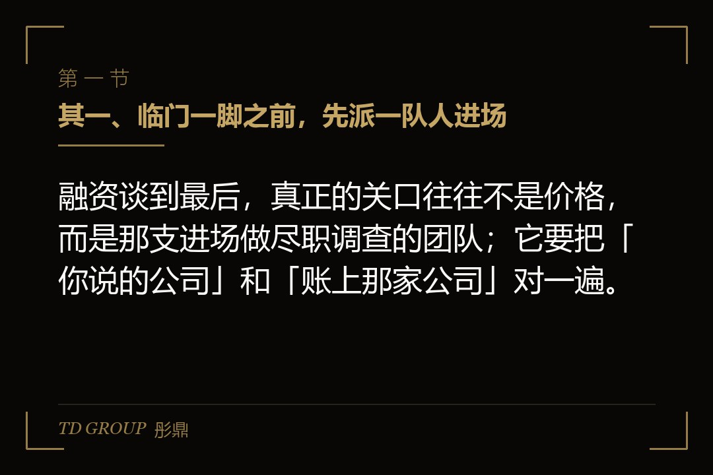
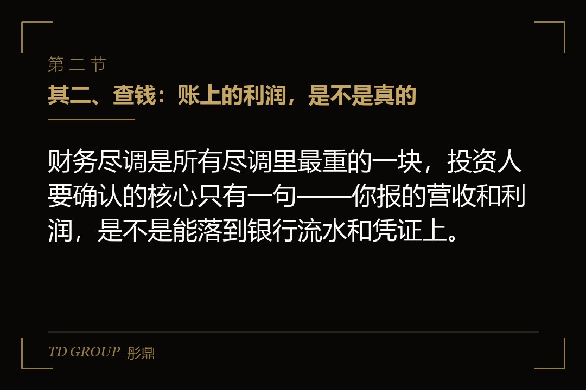
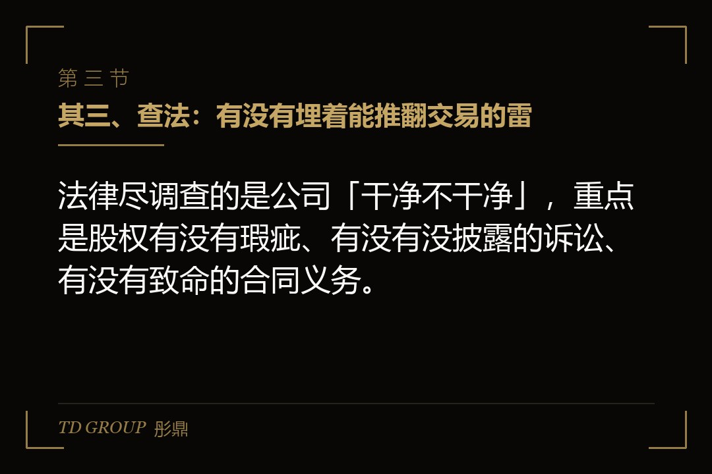

其一、临门一脚之前，先派一队人进场

结论先行：融资谈到最后，真正的关口往往不是价格，而是那支进场做尽职调查的团队；它要把「你说的公司」和「账上那家公司」对一遍。
一家公司的老板，把商业计划书讲了十几遍，终于等来了一句「我们内部过会了」。他以为接下来就是打款。结果对方下一句话是：我们安排一下尽调。
于是来了一队人，有会计师、有律师，可能还有行业里的人。他们不进会议室听你讲，而是坐下来翻你的东西：账本、合同、银行流水、劳动合同、股权登记、知识产权证书。一翻就是一个月。
很多老板头回经历这个，心里是不舒服的：我经营得好好的，你凭什么像审犯人一样审我。但这个动作，恰恰说明对方是真的准备出钱。一个真正要掏钱的人，才愿意花几十万甚至更多的尽调费用，去确认自己投的不是一个被美化过的故事。
所以尽职调查不是刁难，是交易从「谈」走向「做」的分水岭。它查的也不是你这个人，而是四个实实在在的东西：钱、法、业务、人。把这四块想清楚，你就能提前准备，让对方查得顺，也让交易走得更稳。
其二、查钱：账上的利润，是不是真的

结论先行：财务尽调是所有尽调里最重的一块，投资人要确认的核心只有一句——你报的营收和利润，是不是能落到银行流水和凭证上。
财务这一块，投资人最怕的不是你亏钱，而是你「造」出来的利润。所以会计师进场，头一件事不是看你今年赚了多少，而是把你报的数字往回追：营收是不是有对应的合同和流水，成本是不是有对应的发票，应收款是不是真有客户欠着，存货是不是真的在仓库里。
这里最容易出问题的地方，是收入和利润的「口径」。比如把一笔还没到账、甚至还没签约的收入提前记进了账；比如把老板个人账户走的一些钱，混进了公司；比如把一次性的、不可持续的收益，当成常态经营利润。投资人把这些拆穿之后，不是直接否决你，而是会要求你把估值往下调，或者加一堆保护条款。
一句话，财务尽调就是把「账面的公司」翻译回「真实的公司」。你能提前做的，是把这三年的账做干净：该入账的入账，该开票的开票，个人和公司的钱分清楚。账越干净，对方查得越快，你的估值越站得住。
其三、查法：有没有埋着能推翻交易的雷

结论先行：法律尽调查的是公司「干净不干净」，重点是股权有没有瑕疵、有没有没披露的诉讼、有没有致命的合同义务。
法律尽调翻的东西，是公司过去留下的每一份签字。股权这一块最要命：有没有代持没处理、有没有质押没解除、有没有股权转让手续没办完。投资人出钱买的是股权，如果股权本身是乱的，那这笔交易的地基就是松的。
再往下，是诉讼和仲裁。有没有人正在告你，有没有你可能输掉的案子，有没有行政处罚、税务稽查还在路上。投资人不是不接受你有诉讼，而是不能接受你瞒着他。一件你主动讲清楚的官司，是风险；一件你自己都忘了、尽调里被翻出来的官司，就变成了信任问题。
还有一类是合同里的「隐藏义务」。比如你跟某个大客户签了一份排他协议，未来三年只能卖给他；比如你给某个前员工签了很高的竞业补偿。这些单看都不致命，但叠在一起，可能意味着公司未来的自由被绑住了。
还有一类容易被忽略的，是公司的资质和许可。你做的行业如果需要牌照——比如支付、医疗、教育、外贸里的某些环节——那么这些牌照是不是真的、是不是挂在正确的主体名下、会不会在换股东的时候失效，都是法律尽调要逐项确认的。很多交易就栽在这里：业务看着红火，结果一查，最关键的那张资质是借来的、或者是子公司名下而子公司股权又有争议。
法律尽调的核心，是让「股权干净、诉讼透明、义务清楚、资质真实」。你能做的，是进场前先找律师把自己捋一遍，把能解决的瑕疵解决掉，解决不了的列成清单主动交底。
其四、查业务和人：这家公司离了你，还能不能转
结论先行：业务尽调和团队尽调，查的是同一件事——这家公司未来的钱，是不是都绑在老板一个人身上，离了他还能不能持续赚。
财务和法律查的是「过去」，业务和团队查的是「未来」。投资人真正要买的，不是你现在赚的这几百万，而是你未来几年能不能持续赚。所以他要去问你的客户：为什么选你、会不会一直选你；要去查你的竞争对手：你护城河到底有多深；要去盘你的团队：核心的人签了竞业没有、股权激励锁住了没有。
这里最容易被问住的问题，是「如果老板明天不干了，这家公司还值不值钱」。如果所有的客户都是你一个人谈下来的，所有的技术都在你一个人脑子里，那投资人投的就不是一家公司，而是一个人。人会生病、会走、会有别的想法，这样的资产他们不敢重仓。
所以团队尽调会重点看：核心成员有没有签劳动合同和竞业限制，有没有期权或股权绑定，关键岗位有没有备份。你能提前做的，是把你一个人身上的事情，往制度、往团队、往文档上沉淀，让公司看起来是一台能独立运转的机器，而不是围着你一个人转的手工作坊。
业务尽调里，投资人还会专门看一件事：你的收入结构健不健康。如果百分之七十的收入来自一个客户，那这个客户的任何一个风吹草动，都会直接变成公司的危机。投资人会追问这个大客户是谁、合作几年了、合同还剩多久、有没有备选。他们不排斥你有大客户，但会因此把估值打个折，因为这种集中度本身就是风险。
税务也是业务和团队之外，投资人一定会顺带看的一块。公司有没有欠税、有没有被稽查的历史、账上那些个人往来款会不会在日后被认定成该补税的分红或工资。这些问题平时不显眼，一到交易环节就成了要扣款的理由。提前把税务理清，是尽调前最容易被低估、又最划算的一笔准备。
其五、把该做的做到前面：尽调不是等对方查，是你先自己查一遍
结论先行：聪明的企业主，会在投资人进场之前，先请专业的人把自己从头查一遍，把问题解决在对方发现之前。
尽调这件事最反直觉的地方在于：你越是遮着藏着，交易越容易黄；你越是主动交底，反而越容易成交。因为投资人要的不是一个零瑕疵的公司——那样的公司根本不存在——他要的是一个「我知道问题在哪、也接受这些问题」的确定性。
所以一个成熟的老板，会在融资启动之前，先自己安排一轮「预尽调」。把账、法、业务、团队四个方向各捋一遍，列出一张问题清单，能解决的当场解决，解决不了的，想清楚怎么跟投资人讲。
这个动作的价值，不只是让尽调走得更快。它更深的用处，是让你在谈判桌上不被动。你自己先查清楚的东西，你就能主动定价、主动谈条件；等对方查出来你才知道的，你就只能被动接招。差距不在问题有没有，而在问题是谁先发现的。
回到最开头那个场景：投资人说「我们安排一下尽调」，这不是交易要黄了，而是交易真正开始了。你能做的，是让自己配得上这场核查。
---
其六、小结：尽调查的是确定性，不是完美
结论先行：尽职调查的全部目的，是让投资人把钱投在一个他看得清、算得明、睡得着的标的上；对企业主而言，配合好这场核查，本身就是把交易推到最后一步的最短路径。
把整件事收拢起来，尽职调查查的就四样东西。查钱，是确认账面利润能落到真实流水上；查法，是确认股权干净、诉讼透明、义务清楚；查业务，是确认客户和护城河靠得住；查人，是确认公司离了某个人还能转。
这四样东西，没有一样要求你完美，要求的只是「真实」和「清楚」。投资人最怕的从来不是风险本身，而是他不知道的风险。你把公司翻干净了、摊开给他看，他反而敢把钱放进来了。
对企业主来说，最划算的投入，是在对方进场之前，先自己查一遍。省下的不只是尽调时间，更是在谈判桌上多出来的那一份主动权。钱是要进来的，但只有看得清的钱，才会真的进来。